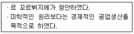
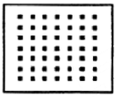

실내건축산업기사 (2010-03-07 기출문제)
1과목: 실내디자인론
1. 다음 중 단독 주택의 방위에 따른 각 실의 배치가 가장 바람직하지 않는 것은?
- 동 - 침실
- 서 - 부엌
- 남 - 거실
- 북 - 창고
(정답률: 80%)

2. 다음 설명이 의미하는 것은?

- 패턴
- 그리드
- 모듈러
- 스케일
(정답률: 93%)
3. 실내 공간에 대한 설명 중 옳지 않은 것은?
- 정방형 공간은 크기와 방향성을 갖는다.
- 직사각형의 공간에서는 깊이를 느낄 수 있다.
- 천장이 모인 삼각형 공간은 높이에 관심이 집중된다.
- 원형의 공간은 중심성을 갖는다.
(정답률: 78%)
4. 다음 중 실내디자인을 평가하는 기준과 가장 관계가 먼 것은?
- 기능성
- 주관성
- 심미성
- 경제성
(정답률: 83%)
5. 측창에 관한 설명으로 옳지 않은 것은?
- 같은 면적의 천창에 비해 채광량이 많다.
- 근린의 상황에 의해 채광의 방해를 받을 수 있다.
- 시공과 개폐가 용이하다.
- 남측 편측창의 경우 실 전체의 조도분포가 비교적 균일하지 않다.
(정답률: 67%)
6. 고대 로마시대 음식물을 먹거나 잠을 자기 위해 사용했던 긴의자로 몸을 기댈 수 있도록 좌판의 한쪽 끝이 올라간 형태를 갖는 것은?
- 체스터필드(Chesterfield)
- 스툴(Stool)
- 세티(Settee)
- 카우치(Couch)
(정답률: 76%)
7. 개방식 배치의 한 형식으로 업무와 환경을 경영관리 및 환경적 측면에서 개선한 것으로 오피스 작업을 사람의 흐름과 정보의 흐림을 매체로 효율적인 네트워크가 되도록 배치하는 방법은?
- 세포형 오피스(cellular tape office)
- 집단형 오피스(group space office)
- 싱글 오피스(single office)
- 오피스 랜드스케이프(office landscape)
(정답률: 83%)
8. 다음 그림과 같이 많은 점이 근접되었을 때 효과로 가장 알맞은 것은?

- 공간으로 지각
- 부피로 지각
- 물체로 지각
- 면으로 지각
(정답률: 86%)
9. 공간을 에워싸는 수직적 요소로 수평방향을 차단하여 공간을 형성하는 기능을 하는 실내 공간의 구성요소는?
- 벽
- 바닥
- 천장
- 기둥
(정답률: 87%)
10. 특정한 사용목적이나 많은 물품을 수납하기 위해 건축화된 가구는?
- 붙받이 가구
- 가동 가구
- 이동 가구
- 유닛 가구
(정답률: 81%)
11. 다음 중 실내디자인을 준비하는 과정에서 기본적으로 파악 되어져야 할 내부적 작용요소에 해당되는 것은?
- 입지적 조건
- 건축적 조건
- 설비적 조건
- 경제적 조건
(정답률: 76%)
12. 다음의 질감(Texture)에 대한 설명 중 옳지 않은 것은?
- 촉각 또는 시각으로 지각할 수 있는 어떤 물체 표면상의 특징을 말한다.
- 매끄러운 재료는 빛을 흡수하여 안정적인 느낌을 준다.
- 질감의 선택에서 중요한 것은 스케일, 빛의 반사와 흡수, 촉감 등이다.
- 나무, 돌, 흙 등의 자연재료는 인공적인 재료에 비해 따뜻함과 친근함을 준다.
(정답률: 81%)
13. 사무실 내에서 사용하는 광원의 선택기준과 가장 관계가 먼것은?
- 연색성
- 장식성
- 전기적 효율
- 비가시광의 특성
(정답률: 67%)
14. 백화점의 매장 계획에서 공간계획방법으로 옳은 것은?
- 전략적 상품군과 수익성이 큰 상품은 주 동선에서 떨어진 별도의 동선에 배치한다.
- 고객을 위한 휴식공간과 편의시설은 한 층이나 한 장소에 집중 배치한다.
- 최소의 인원으로 매장을 관리할 수 있도록 상품을 배치한다.
- 각 층의 입구 부분에 인기품목을 배치한다.
(정답률: 63%)
15. 실내디자인에 관한 설명 중 옳지 않은 것은?
- 실내디자인이란 인간이 거주하는 실내공간을 보다 능률적이고 쾌적하며 아름답게 계획, 설계하는 작업이다.
- 실내디자인은 목적을 위한 행위이나 그 자체가 목적이 아니고 특정한 효과를 얻기위한 수단이다.
- 실내 디자인은 미술에 속하므로 미적인 관점에서만 그 성공여부를 판단할 수 있다.
- 실내디자인의 영역은 주거공간, 상업공간, 업무공간, 특수공간 등으로 나눌 수 있다.
(정답률: 92%)
16. 실내디자인 요소에 관한 설명 중 옳지 않은 것은?
- 베이윈도우(bay window)는 바닥부터 천장까지 닿는 커다란 창들을 통칭하는 것이다.
- 브라인드(blind)는 일조, 조망과 시각차단을 조정하는 기계적인 창가리개이다.
- 드레이퍼리(drapery)는 창문에 느슨하게 걸려 있는 무거운 커튼으로 장식적인 목적으로 이용된다.
- 플러쉬도어(flush door)는 일반적으로 사용되는 목재문을 말한다.
(정답률: 55%)
17. 다음 중 그리스 신전 건축에서 사용된 착시교정 수법이 아닌 것은?
- 모서리쪽의 기둥 간격을 보다 좁혀지게 만들었다.
- 기둥을 옆에서 볼 때 중앙부가 약간 부풀어 오르도록 만들었다.
- 기둥과 같은 수직 부재를 위쪽으로 갈수록 약간 안쪽으로 기울어지게 만들었다.
- 아키트레이브, 코니스 등에 의해 형성되는 긴 수평선을 아래쪽으로 약간 불룩하게 만들었다.
(정답률: 51%)
18. 기하학적 형태(geom etrical Forn)에 대한 설명으로 옳지 않은 것은?
- 수학적인 법칙과 함께 생긴다.
- 뚜렷한 질서를 가지고 있다.
- 유기적 형태와 동일한 특징을 가진다.
- 자연적 형태보다 인공적 형태의 특징을 가진다.
(정답률: 56%)
19. 주택에서 부엌과 식당을 겸용하는 다이닝 키친(Dining Kitchen)의 가장 큰 장점은?
- 평면계획이 자유롭다.
- 이상적인 식사 공간 분위기 조성이 용이하다.
- 공사비가 절약된다.
- 주부의 동선이 단축된다.
(정답률: 78%)
20. 상업공간의 동선계획에 대한 설명으로 옳지 않은 것은?
- 고객동선을 가능한 길게 배치하는 것이 좋다.
- 판매동선은 고객동선과 일치해야 하며 길고 자연스러워야한다.
- 상업공간 계획시 가장 우선순위는 고객의 동선을 원활히 처리하는 것이다.
- 관리동선은 사무실을 중심으로 매장, 창고, 작업장 등이 최단거리로 연결되는 것이 이상적이다.
(정답률: 74%)
2과목: 색채 및 인간공학
21. 다음 중 인간-기계 시스템의 기본기능이 아닌 것은?
- 감지(sensing)
- 정보처리 및 의사결정
- 행동기능
- 가치기중 유지
(정답률: 82%)
22. 인간-기계체계(man-machine system)에서 ‘정보의 보관’과 관련한 것이 아닌 것은?
- 펀치카드
- 자기테이프
- 디스켓
- CRT모니터
(정답률: 83%)
23. 다음 중 인간의 운동기능에서 진전(振顫 떨림)이 증가되는경우는?
- 작업 대상물에 기계적인 마찰이 있을 때
- 몸와 작업에 관계되는 부위가 잘 지지되어 있을 때
- 손 떨림의 경우 손이 심장 높이에 있을 때
- 떨지 않도록 힘을 주고 있을 때
(정답률: 73%)
24. 다음 중 작업장의 조명 설계에 관한 설명으로 틀린것은?
- 광원 및 물건에서도 눈부심이 없도록 한다.
- 작업 부분과 배경 사이에는 코트라스트가 없도록 한다.
- 광원의 휘도를 줄이고, 광원의 수를 늘린다.
- 작업 중 손 가까이를 적당한 밝기로 비춘다.
(정답률: 70%)
25. 다음 중 단위 면적당 표면에서 반사 또는 방출되는 광량(光量)을 나타내는 것은?
- 조도(illum inance)
- 광도(lum inance)
- 반사율(reflectance)
- 광량(luminous intensity)
(정답률: 52%)
26. 다음 중 인체 측정치의 하위 백분위수를 기준으로 디자인하는 것은?
- 문의 넓이
- 사다리의 강도
- 선반의 높이
- 탈출구의 높이
(정답률: 85%)
27. 다음 중 신체의 피부감각에 관한 설명으로 틀린것은?
- 통각 : 피부에 가장 넓게 분포되어 있어 모든 자극에 민감하다.
- 압각 : 압각의 식별력은 피부 두께에 따라 다르게 느낀다.
- 온도감 : 피부는 자기 방어 능력이 없기 때문에 외부 온도에 따라 온도가 많은 변화를 갖는다.
- 진동감각 : 독립된 감각이 아니고 압력 감각에 의존한다.
(정답률: 67%)
28. 다음 중 정상적인 사람이 들을 수 있는 가청주파수의 범위로 옳은 것은?
- 0 ~ 10000㎐
- 20 ~ 20000㎐
- 40 ~ 40000㎐
- 60 ~ 60000㎐
(정답률: 76%)
29. 다음 중 지침과 눈금과의 적용에 대한 설명으로 틀린 것은?
- 다이얼 자판에는 대문자를 사용한다.
- 활자체는 이탤릭체를 주로 한다.
- 다이얼식 이탤릭체를 주로 한다.
- 지침의 끝은 가장 가는 눈금선과 같은 폭이 되도록 한다.
(정답률: 54%)
30. 다음 중 수공구의 설계와 관련하여 적절하지 않은 것은?
- 손잡이는 가능한 얇은 것이 좋다.
- 반복적인 손가락 동작은 피하도록 한다.
- 손목의 꺾임을 방지해야 한다.
- 과도한 힘의 가함을 방지해야 한다.
(정답률: 85%)
31. 오스트발트 표색계에 대한 설명 중 틀린 것은?
- 등색상 삼각형에서 무채색축과 평행선산에 있는 색들은 순색 혼량이 같은 색계열이다.
- 무채색에 포함되는 백에서 흑까지의 비율은 백이증가하는 방법을 등비급수적으로 선택하고 있다.
- 헤링의 4원색설을 기본으로 하여 색상 분할을 원주의 4등분이 서로 보색이 되도록 하였다.
- Ostwald의 색입체는 원통형의 모양이 된다.
(정답률: 60%)
32. 다음 색의 진출, 후퇴의 일반적인 성질 중 틀린것은?
- 배경색과의 명도차가 큰 밝은 색은 진출되어 보인다.
- 무채색보다는 난색계의 유채색이 진출되어 보인다.
- 난색계는 한색계보다 진출되어 보인다.
- 배경색의 채도가 높은 것에 대한 낮은 색은 진출 되어 보인다.
(정답률: 74%)
33. 색채환경 분석에서 경쟁업체의 관용색채 분석 대상으로 가장 거리가 먼 것은?
- 기업색
- 상품색
- 포장색
- 기호색
(정답률: 54%)
34. 다음 주목성이 가장 높은 색은?
- 적색
- 회색
- 녹색
- 청색
(정답률: 90%)
35. 문·스펜서의 조화론에서 모든 색의 중심이 되는 순응점은?
- N5
- N7
- N9
- N10
(정답률: 81%)
36. 빛을 프리즘에 통과하였을 때 나타난 스펙트럼상의 색 중 가장 긴 파장을 가지고 있는 것은?
- 노랑
- 빨강
- 보라
- 녹색
(정답률: 71%)
37. 색의 분류와 관련된 내용으로 틀린 것은?
- 색은 유채색과 무채색으로 나눌 수 있다.
- 무채색인 흰색은 반사율이 약85% 정도이다.
- 무채색의 온도감은 중성이지만 흰색은 차갑게 느껴진다.
- 무채색 중 흰색의 채도는 10정도이다.
(정답률: 54%)
38. 다음 중 가장 부드러운 느낌을 주는 색은?
- 저명도, 고채도의 색
- 저명도, 저채도의 색
- 고명도, 저채도의 색
- 고명도, 고채도의 색
(정답률: 59%)
39. 왼쪽 검은 원반 중심을 40초 동안 바라보다 오른쪽 검은점으로 옳기면 무슨 현상이 일어나는가?
- 명도대비
- 부의잔상
- 면적대비
- 정의 잔상
(정답률: 68%)
40. 비렌의 색채조화 원리에서 가장 단순한 조화이면서 일반적인 깨끗하고 신선해 보이는 조화는?
- COLOR - SHADE - BLACK
- TINT - TONE - SHADE
- COLOR - TINT - WHITE
- WHITE - GRAY - BLACK
(정답률: 74%)
3과목: 건축재료
41. 미장재료인 회반죽을 혼합할때 소석회와 함께 사용되는 것은?
- 카세인
- 아교
- 목섬유
- 해초풀
(정답률: 80%)
42. 목재의 건조에 대한 설명 중 옳지 않은 것은?
- 대기건조시 통풍을 잘되게 세워 놓거나, 일정 간격으로 쌓아올려 건조시킨다.
- 마구리부분은 급격히 건조되면 갈라지기 쉬우므로 페린트 등으로 도장한다
- 인공건조법은 약 3~4주 정도 걸린다.
- 고주파건조법은 고주파 에너지를 열에너지로 변화 시켜 발열현상을 이용하여 건조한다.
(정답률: 69%)
43. 목재의 강도에 관한 설명 중 옳지 않은 것은?
- 목재의 제강도 중 섬유 평행방향의 인장강도가 가장 크다.
- 목재를 기둥으로 사용할 때 일반적으로 목재는 섬유의 평행방향으로 압축력을 받는다.
- 함수율이 섬유포화점 이상으로 클 경우 함수율 변동에 따른 강도변화가 크다.
- 목재의 인장강도 시험 시 죽은 옹이의 면적을 뺀 것을 재단면으로 가정한다.
(정답률: 59%)
44. 고로시멘트는 포틀랜드 시멘트 클링커에 어떤 물질을 첨가한 것인가?
- 고로슬래그
- 플라이애쉬
- 포졸란
- 알루미나
(정답률: 74%)
45. 다음 중 화성암에 속하는 석재는?
- 부석
- 사암
- 석회석
- 사문암
(정답률: 47%)
46. 다음 중 시멘트의 분말도 시험방법이 아닌 것은?
- 체분석법
- 로스앤젤레스법
- 피크노메타법
- 브레인법
(정답률: 65%)
47. 유리에 관한 설명으로 옳지 않은 것은?
- 강화유리는 보통유리보다 3~5배 정도 내충격 강도가 크다.
- 망입유리는 도난 및 화재 방지 등에 사용된다.
- 복층유리는 방음, 방서, 단열효과가 크고 결로방지용으로도 우수하다.
- 판유리 중 두께 6mm이하의 얇은 판유리를 후판유리라고 한다.
(정답률: 76%)
48. 점토 제품에 바르는 유양 중 원료를 미리 용융시켜서 유리상으로 만든 것을 분쇄한 것은?
- 유백유
- 사금석유
- craft유
- 투명유약
(정답률: 61%)
49. 유성페인트에 대한 설명 중 옳지 않은 것은?
- 건조시간이 길다.
- 내알칼리성이 우수하다.
- 붓바름 작업성이 뛰어나다.
- 보일유와 안료를 혼합한 것을 말한다.
(정답률: 73%)
50. 각종 금속에 대한 설명 중 옳지 않은 것은?
- 티탄은 열팽창계수가 작으며 열전도율이 낮고 전기저항이 높다.
- 납은 타금속에 비해 비중이 아주 작은편이며 전. 연성이 작다.
- 아연은 인장강도나 연신율이 낮기 때문에 열간 가공하여 결정을 미세화하여 가공성을 높일 수 있다.
- 니켈은 전.연성이 풍부하고 내식성이 크며 미려한 청백색 광택이 있다.
(정답률: 59%)
51. 다음 미장재료 중 경화속도가 가장 빠른 것은?
- 시멘트 모르타르
- 회반죽
- 돌로마이트 플라스터
- 석고 플라스터
(정답률: 55%)
52. 다음 중 제강법에 해당하지 않는 것은?
- 전로 제강법
- 평로 제강법
- 전기로 제강법
- 간접 제강법
(정답률: 52%)
53. 표면활성제의 일종으로 기포작용은 하지 않고 분산 및 습윤작용에 의해 시멘트 입자를 분산시켜 시멘트 페이스트의 유동성을 증가시킴으로써 콘크리트의 워커빌리티를 개선하여 단위수량을 감소시키는 혼화제는?
- 경화 촉진제
- 방수제
- 감수제
- 방청제
(정답률: 74%)
54. 펄라이트 모프타르 바름에 대한 설명으로 옳지 않은 것은?
- 재료는 진주암 또는 흑요석을 소성 팽창시킨 것이다.
- 펄라이트는 비중 0.3 정도의 백색 입자이다.
- 내화피복재를 바름으로 쓰인다.
- 균열이 거의 발생하지 않는다.
(정답률: 58%)
55. 퍼티, 코킹, 실런트 등의 총칭으로서, 건축물의 프리패브공법, 커튼월 공법 등의 공장 생산화가 추진되면서 주목받기 시작한 재료는?
- 아스팔트재
- 실재
- 셀프 레벨링재
- FRP보강재
(정답률: 62%)
56. 다음 중 ALC제품의 단점에 해당하는 것은?
- 방음, 단열효과가 떨어진다.
- 비내력벽으로 활용이 어렵다.
- 흡수성이 크다.
- 현장에서 절단 및 가공이 불가능하다.
(정답률: 59%)
57. 다음 중 콘크리트 표면도장에 가장 적합한 도료는?
- 염화비닐수지도료
- 조합페인트
- 클리어래커
- 알루미늄페인트
(정답률: 51%)
58. 침엽수에 대한 설명으로 옳은 것은?
- 대표적인 수종은 소나무와 느티나무,박달나무 등이다.
- 재질에 따라 경재(hard wood)로 분류된다.
- 일반적으로 활엽수에 비하여 직통대재가 많고 가공이 용이하다.
- 수선세포는 뚜렷하게 아름다운 무늬로 나타난다.
(정답률: 65%)
59. 프탈산고 글리세린수지를 변성시킨 포화폴리에스테르수지로 내후성, 접착성이 우수하며 도료나 접착제 등으로 사용되는 합성수지는?
- 알키드수지
- A.B.S수지
- 스티롤수지
- 에폭시수지
(정답률: 53%)
60. 양모, 마사, 폐지 등을 원료로 하여 만든 원지에 연질의 스트레이트 아스팔트를 가열.용융시켜 충분히 흡수 시킨 후 회전로에서 건조와 함께 두께를 조정하여 롤형으로 만든 것은?
- 아스팔트 루핑
- 알루미늄 루핑
- 아스팔트 펠트
- 개량 아스팔트 루핑
(정답률: 56%)
4과목: 건축일반
61. 다음 중 한식기와 이음에서 사용하지 않는 것은?
- 아귀토
- 보습장
- 알매흙
- 걸침기와
(정답률: 50%)
62. 철근콘크리트 구조에 관한 설명 중 옳지 않은 것은?
- 철근과 콘크리트의 선팽창계수는 거의 같다.
- 철근과 콘크리트의 응력전달은 철근표면의 부착력에 의한다.
- 철근과 콘크리트의 응력분담은 각각의 단면적비에 의한다.
- 콘크리트는 내구.내화성이 있어 철근을 피복 보호한다.
(정답률: 50%)
63. 다음 중 속빈 콘크리트 기본 블록치수가 아닌 것은?(단, 길이×높이×두께이며, 단위는 mm)
- 390 × 190 × 100
- 390 × 190 × 150
- 390 × 190 × 170
- 390 × 190 × 190
(정답률: 59%)
64. 건축물의 3층 이상인 층(피난층은 제외한다)으로서 직통계단 외에 그 층으로부터 지상으로 통하는 옥외피난계단을 따로 설치하여야 하는 것은?
- 문화 및 집회시설 중 공연장의 용도로 쓰는 층으로서 그층 거실의 바닥면적의 합계가 400m2 인 것
- 위락시설 중 주점영업의 용도로 쓰는 층으로서 그 층 거실의 바닥면적의 합계가 200m2인 것
- 문화 및 집회시설 중 집회장의 용도로 쓰는 층으로서 그층 거실의 바닥면적의 합계가 500m2인 것
- 문화 및 집회시설 중 집회장의 용도로 쓰는 층으로서 그층 거실의 바닥면적의 합계가 800m2인 것
(정답률: 40%)
65. 건축법에서 계단에 대체하여 설치되는 경사로의 경사도는 최대 얼마를 넘지 않아야 하는가?
- 1:6
- 1:8
- 1:10
- 1:12
(정답률: 68%)
66. 다음 중 국토해양부령으로 정하는 기준에 따라 건축물로부터 바깥쪽으로 나가는 출구를 설치하여야 하는 대상 건축물에 속하지 않는 것은?
- 전시장 및 동ㆍ식물원
- 종교시설
- 장례식장
- 국가 또는 지방자치단체의 청사
(정답률: 65%)
67. 다음 중 왕대고 지붕틀을 구성하는 부재가 아닌것은?
- 평보
- ㅅ자보
- 빗대공
- 반자틀
(정답률: 57%)
68. 제연설비를 설치해야 할 특정소방대상물이 아닌것은?
- 특정소방대상물(갓복도형아파트를 제외한다)에 부설된 특별피난계단 또는 비상용승강기의 승강장
- 지하가(터널을 제외한다)로서 연면적이 500m2인 것
- 문화집회 및 운동시설로서 무대부의 바닥면적이 300m2인 것
- 지하가 중 터널로서 길이가 1200m 인 것
(정답률: 42%)
69. 건축물에 설치하는 계단의 높이가 최소 얼마를 넘을 경우에 계단의 양옆에 난간을 설치해야 하는가?
- 1m
- 2m
- 3m
- 3.5m
(정답률: 67%)
70. 다음 중 철골구조에 관련한 부재명이 아닌 것은?
- 베이스 플레이트(base plate)
- 스캘럽(scallop)
- 스택조인트(stack joint)
- 슬래그(slag)
(정답률: 40%)
71. 한국전총건축의 용어에 관한 다음 설명 중 옳지 않은 것은?
- 평방 - 기둥상부의 창방 위에 놓아 다포계 건물의 주간포작을 설치하기 용이하도록 하기 위한 직사각형 단면의 부재이다.
- 연등천장 - 따로 반자를 설치하지 않고 서까래를 그대로 노출시킨 천장이며, 구조미를 나타낸다.
- 귀솟음 - 기둥머리를 건물 안쪽으로 약간씩 기울여 주는 것을 말하며, 오금법이라고도 한다.
- 활주 - 추녀 밑을 받치고 있는 기둥을 말한다.
(정답률: 69%)
72. 학교교실의 바닥면적이 250m2일 때 채광을 위하여 설치하는 창문 등의 최소 크기는?
- 12.5m2
- 25m2
- 37.5m2
- 50m2
(정답률: 75%)
73. 다음 중 "프랭크 로이드 라이트"의 작품에 해당되는 것은?
- 카프만 주택
- 롱샹 성당
- 아이슈타인 타워
- 슈뢰더 주택
(정답률: 60%)
74. 건축물에 설치하는 굴뚝에 관한 기준으로 옳지 않은 것은?
- 굴뚝의 옥상 돌출부는 지붕면으로부터의 수직거리를 1m이상으로 할 것
- 굴뚝의 상단으로부터 수평거리 1m 이내에 다른 건축물이 있는 경우에는 그 건축물의 처마보다 1.5m이상 높게 할 것
- 금속제 또는 석면제 굴뚝으로서 건축물의 지붕속 반자위 및 가장 아랫바닥 밑에 있는 굴뚝의 부분은 금속외의 불연재료로 덮을 것
- 금속제 또는 석면제 굴뚝은 목재 기타 가연재료로부터 15cm이상 떨어져서 설치할 것
(정답률: 63%)
75. 철골구조의 부재중 트러스의 절점 또는 기둥의 절 점을 대각선 방향으로 연결하여 풍하중 등의 수평력에 저항하여 구조체의 변형을 방지하는 것은?
- 가새(brace)
- 중도리(purlin)
- 스티프너(stiffener)
- 래티스(lattice)
(정답률: 54%)
76. 서양건축 양식의 변화 과정으로 옳은 것은?
- 그리스 - 로마 - 초기기독교 - 로마네스크 - 고딕 - 르네상스
- 로마 - 비잔틴 - 르네상스 - 로마네스크 - 고딕
- 고딕 - 르네상스 - 비잔틴 - 신고전주의 - 로마네스크
- 이집트 - 그리스 - 고딕 - 비잔틴 - 르네상스
(정답률: 60%)
77. 다음 중 토대의 모서리 부분의 맞춤으로 가장 알맞은 것은?
- 안장맞춤
- 연귀 장부 맞춤
- 부채 장부 맞춤
- 턱걸이 주먹장 맞춤
(정답률: 52%)
78. 바우하우스 교육에 대한 설명 중 옳지 않은 것은?
- 교육의 주요 목적은 예술가를 공업적이고 민주적인 사회에 새로운 역할로 재교육시키는 것이다.
- 예비과정에서는 재료, 형태, 색 등에 대한 기본교육을 하였다.
- 이론과 실천이라는 교육이념 아래 근대예술의 제반 경향을 조직화된 교육으로 응집하였다.
- 통합적인 교육보다는 각 예술에 비중을 두어 보자르식 아카데미교육으로 전환하였다.
(정답률: 65%)
79. 다음 중 방염대상물품에 해당하지 않는 것은?
- 카페트
- 두께 2㎜의 종이벽지
- 암막
- 브라인드
(정답률: 82%)
80. 철골구조의 접합에서 두 부재의 두께가 다를 때 같은 두께가 되도록 끼워넣는 부재는?
- 거셋플레이트(gusset plate)
- 필러플레이트(filler plate)
- 커버플레이트(cover plate)
- 베이스플레이트(base plate)
(정답률: 68%)